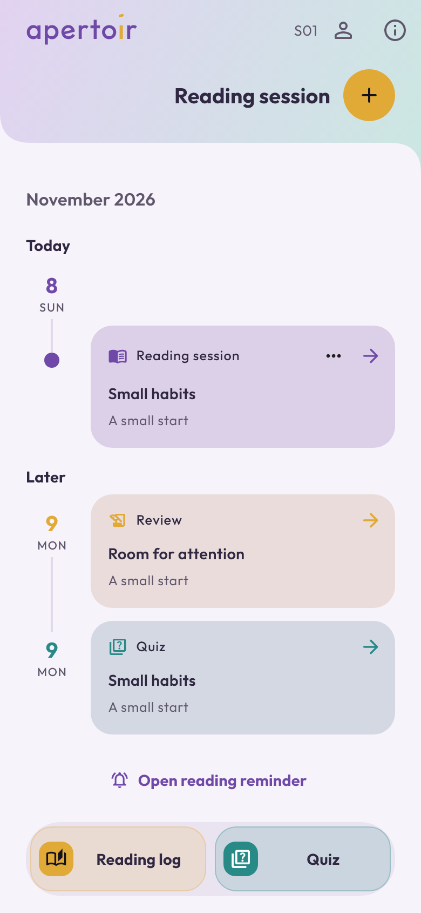
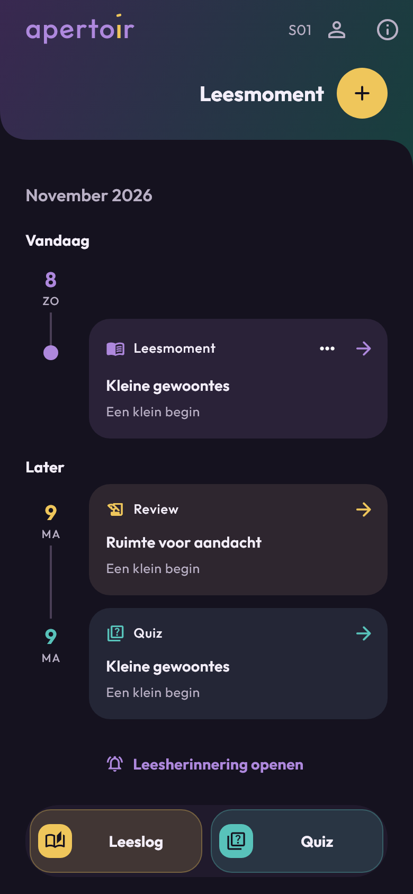
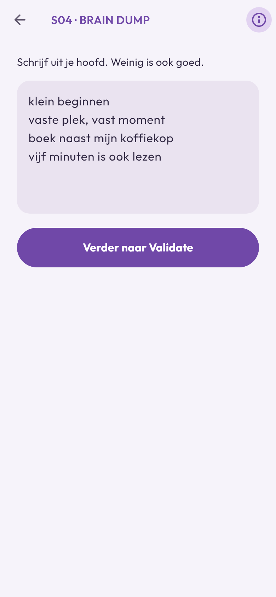
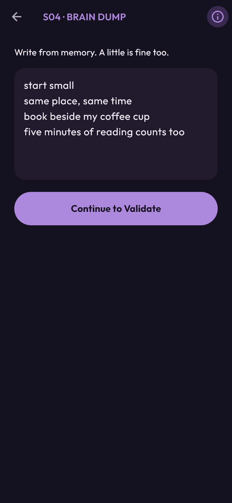
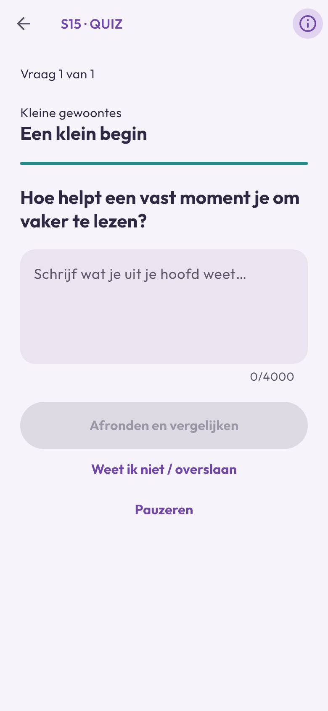
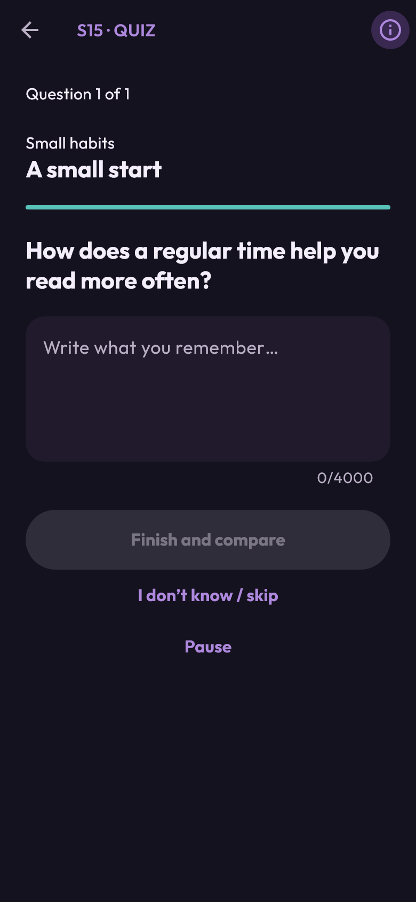

Maak er ruimte voor.
Plan een leesmoment en vind je leesmomenten, reviews en quizzen terug in één overzicht.
Jouw leeslog. Jouw ritme. Jouw gedachten.
Een moment om te lezen. Ruimte om te onthouden. apertoir brengt je leesritme, leesnotities en quizzen bij elkaar.
Ontdek apertoirJe leest in je eigen boek of e-reader. apertoir helpt je daarna verder.
Een kijkje in apertoir
Rust om te lezen. Ruimte voor je gedachten.
Bekijk hoe dat eruitziet in de app.
Je leesmomenten en reviews bij elkaar. Zo geef je lezen een plek in je dag.


Bekijk groterLosse woorden, een korte zin, een gedachte. Begin met wat je uit je hoofd weet.


Bekijk groterOefen met een vraag over je eigen notities en ontdek wat je nog weet.


Bekijk groterEchte schermen uit de Free-build, met fictieve voorbeeldinhoud. De app is nog in ontwikkeling.
Van lezen naar terughalen
Plan een leesmoment en vind je leesmomenten, reviews en quizzen terug in één overzicht.
Leg vast wat je hebt onthouden. Controleer en vul aan met de highlights uit je boek of e-reader.
Oefen met vragen op basis van je opgeslagen leesnotities. In Free maak je die via je eigen AI-chat, met kopiëren en importeren.
De AI-quizmaker · apertoir Free
Wat herinner je je van wat je las? Maak een quiz vanuit je eigen braindump en leesnotities. In Free werk je daarvoor met je eigen AI-chat.
Kies de boeken waarmee je wilt oefenen. apertoir zet een quizverzoek klaar op basis van je opgeslagen notities. Losse woorden en korte zinnen mogen ook, zolang ze samen genoeg context geven.
Kopieer het quizverzoek en plak het in je eigen AI-chat. Kopieer daarna het volledige antwoord terug naar apertoir via ‘Plakken en importeren’. De app controleert de opmaak en de broncitaten voordat je begint.
Beantwoord de vragen in apertoir. Vergelijk met het voorbeeldantwoord en je bronnotitie en schat zelf in wat je nog weet. Vragen die je opnieuw wilt oefenen, kun je later weer inplannen.
Ruimte voor nieuwe stukjes. apertoir houdt bij welke stukjes notitie al zijn bevraagd en slaat die over bij een nieuwe quiz. Een herhaalquiz oefent juist de eerdere bron opnieuw. Hetzelfde onderwerp kan in andere notities nog terugkomen.
Jij kiest wat je deelt. Voor de AI-chatfunctie log je in bij apertoir. Het verzoek bevat tekst uit je geselecteerde notities; door het te plakken deel je die met je gekozen AI-dienst. Bestaande quizzen bekijken en zonder AI oefenen kan ook als gast. Lees meer over je gegevens.
Een AI-antwoord kan fouten bevatten. Gebruik je bronnotitie en je boek om te controleren wat klopt.
In ontwikkeling
We werken aan de eerste publieke versie van apertoir. Zodra de app beschikbaar is, vind je hier de downloadlinks.